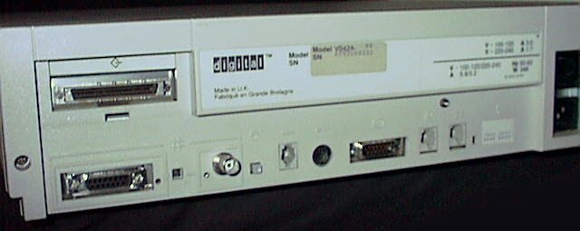

For CPU power and ease of adding reasonable disks, not much beats the VAXstation 3100's. The VAXstation 3100 is Digital's powerful, low-cost VAXstation for high-performance graphics applications. It was first introduced in 1989. The VAXstation 3100 is a member of the VAX family of computers. Based on the second generation of VAX chipset technology, the VAXstation 3100 redefines low-end VAX computing by delivering three times the performance of previous entry-level VAXstation workstations. It is quiet (when you replace the RZ23 hard disk with a more modern drive) and small, compared to other VAXen. For all the details see: DEC VS3100 specifications

On this picture you see the back of my VS3100. It has the following connections and switches:
This is a picture of the 'MFM/SCSI controller board.' It has a standard connector for a floppy drive (the blue one), but a weird one with very thin pins (the black one in the lower right) for the SCSI drives. The cable that goes in it has normal 50 pin SCSI plugs for the hard disks. The floppy is a standard 1.44MB RX23 drive.
My VS3100 has this VS40X color graphics board. I believe it is also called the GPX board.
This is a picture of the SPX graphics board. You can find a very large picture of the front of the SPX board here and of the back of the SPX board here.
If the VS3100 won't start up, the diag leds on the back show why. Click herefor the diagnostic leds definitions.
TEST F - base video (mono)
TEST E - system clock (clk)
TEST D - nonvolatile ram
TEST C - serial line controller (dz)
TEST B - system memory (mem)
TEST A - memory management unit (mm)
TEST 9 - floating point unit (fp)
TEST 8 - interval timer (it)
TEST 7 - device controller
STRG-1 system with diskette drive
SCSI-A system without diskette drive
TEST 6 - device controller
SCSI-A system with diskette drive
SCSI-B system without diskette drive
TEST 5 - interrupt controller and ethernet ID ROM (sys)
TEST 4 - 8-plane option (8pln)
TEST 3 - reserved (device not present in standard config)
TEST 2 - reserved (device not present in standard config)
TEST 1 - ethernet circuits
TEST 0 - system exercizer
TEST 50 - configuration display
TEST 54 - change keyboard language
TEST 75 - SCSI disk data eraser
0 - open 1 - RZ55 external disk 332mb 2 - open 3 - RZ23 internal disk 100mb 4 - RRD40 cdrom 5 - TK50Z tape 95mb 6 - SCSI-B controller 7 - reserved for devices requiring the highest priority on the bus
TEST 50 at the >>> prompt will scan the SCSI bus and display the available devices. FFFFFF05 indicates an open ID. other ID's are
00000001 - RZ23 05020001 - RRD40 01000000 - TK50Z FFFFFF03 - the SCSI controller
If you add a second RZ55 you should set its SCSI ID to 0 or to another unused ID. Each device must have an unique id.
TEST 75 initializes a SCSI hard disk. this will destroy all data on the disk.
TEST 50 also shows the amount of RAM memory installed in the VS3100.
0004.0001 4MB 0008.0001 8MB 000C.0001 12MB 0010.0001 16MB 0014.0001 20MB 0018.0001 24MB 0020.0001 32MB
Below is a list of SCSI CD drives known or believed to work with VAX systems. The basic requirement is support for 512-byte block size. Some information (entries marked with a "*") was extracted from the Sun CD-ROM FAQ - most older Sun workstations share the 512 byte block size requirement. The FAQ also has additional details about some of the drives listed below, as well as instructions on how to modify certain models of Toshiba CD-ROM drives to change their block size.
DEC RRD40, slow, first generation CD-ROM DEC RRD42, 1X DEC RRD43 DEC RRD45 DEC RRD46 (*) Plextor 4x/6x/8x/10x/12x (*) Plextor 12x/20x PlexWriter RW 4/2/20 Most, if not all Plextor drives. See http://www.plextor.com and check if the drive has a jumper of DIP-switch for block size. (*) Hitachi CDR-1750S (*) Laser Magnetic Storage International Company (LMSI) CM234, 1X (*) Panasonic CR-503B, 2X (*) Panasonic CD-506B, 8X (*) Pioneer 4.4x SCSI-2 (*) Pioneer DRM600/DRM604X (*) Sony CDU-541/561/8012 Sony CDU55
Keep in mind that if a drive is in this list, that does not mean it will work, as I found out myself! A friend had a VAXstation 3100 KA42-A V1.3 that we wanted to install an OS on that booted from CD, and only the fifth drive we tried worked!! The first drives we used were modern Ricoh, Sun and Plextor drives, and all we got was a lot of impressive error messages, and we were sure that the blocksize jumper was set correctly. Only when we tried a very very very old single speed Unisys drive the system booted. It was an external drive, and we didn't have the correct cable, and the drive couldn't be removed from the cabinet because it had proprietary internal connectors, so we had to add a centronix external SCSI flat cable connector to the internal flat cable meant for the tape drive!
Left you see the VS3100 with the Unisys drive on top of it, and to the right of the drive you see the external SCSI cable connected to the centronix connector my friend added to the cable. A detail is seen on the second picture.
You can see a kitchen counter behind the computer in the first picture. On this counter the connector was added to the cable. We did not have the right tools, so my friend added the connector by pressing down all 50 wires in the flatcable one by one in the little golden contacts of the connector with a sharp kitchen knife :) He only had to recheck the connections once, on the second try the machine booted :)
So it seems old VS3100 boot roms can only talk to old cd rom drives.
A 6-pin modified modular jack (MMJ) is used for serial ports on the VAXstation. DEC carries four DB-to-MMJ adaptors. They are internally wired as follows:
Rdy Out TX+ TX- RX- RX+ Rdy In
Adaptor Gender 1 2 3 4 5 6 Use with:
--------------------------------------------------------------------------
H8575-A F 20 2 7 7 3 6&8 VTxxx terminal
H8571-C M 6 3 7 7 2 20 DEC printer
H8571-D M 6 3 7 7 2 20 Modem
H8571-E M 20 2 7 7 3 6&8 Female terminal
or LaserWriter
--------------------------------------------------------------------------
In normal operations the console appears on the graphics monitor of the VS3100. But often VS3100s reach their new owners without this monitor. It is possible to switch the console over to a serial port, so you can connect a standard terminal to the VS3100. What to do:
Flip the S3 switch on the back of the VAXstation 3100 system -- on the early models of the first-generation VAXstation 3100 model 30 and 40 systems, this switch was accessable only by opening up the enclosure; there was no access hole through the rear case of the system -- and plug the serial line from a VT-series terminal into the printer port MMJ (DECconnect, DEC423) socket.
S3 set `down' sets the graphics console. S3 `up' selects the printer line as the console. (S3 is a single DIP switch.) Looking at the back it should be a very small hole next to the selftest lights.
Set the terminal to 9600,8,N,1 XON/XOFF.
If all you see on the terminal is a few error codes, and no three chevron prompt, you have the serial cable in the wrong port.
Click here for a list of console commands researched by Brian D. Chase. A sample startup procedure with an explanation of some possible errors is here.
This machine will run NetBSD/vax very nicely. The full distribution is available. The kernel only supports a console via a serial port or via the monochrome grapics card. X is not working completely yet, so command line only for the time being.
Booting from the hard disk of the VS3100 is not supported in 1.3.2, you will have to netboot it. In 1.4.2 the VS3100 SCSI is supported.
If you have a supported CDROM drive you are very lucky, because installing NetBSD will be very easy. A bootable CDROM image of NetBSD/VAX 1.5 is available at ftp.netbsd.org/pub/NetBSD/misc/iso/ It is a 55MB bootable cd image that has the sysinstall program and the complete distribution. The installation manual to go with it is at ftp.netbsd.org/pub/NetBSD/NetBSD-1.5/vax/INSTALL.html
VAXstation Ctrlr Cable Example Monitors
---------- ----- ----- ----------------
VS3100 Monochrome GPX BC23K VR260, VR262, VR150
VS3100 Monochrome GPX BC18P-10 VR260, VR262, VR150
VS3100 Greyscale GPX BC19S VR260, VR262, VR150
VS3100 Greyscale SPX BC23J-03 VR260, VR262, VR150, VR319
VS3100 Color GPX BC23J-03 VR290, VR299, VR297, VR160
VS3100 Color GPX BC19S VR290, VR299, VR297, VR160
VS3100 Color SPX BC23J-03 VR290, VR299, VR297, VR160
Greyscale displays require a color co-processor board. The SPX graphics controller is switchable between 60 Hz 1024 x 864 and 66 Hz 1280 x 1024, while the GPX uses 60 Hz 1024 x 864. Both use RGB synch-on-green.
The video signal format is sync on green 54.9 KHz horizontal and 60 Hz vertical in the 'GPX mode' the SPX mode runs 70 KHz horizontal and 66 Hz vertical.
Pinout color video port: 1-red, 10-green, 11-blue, 2-shields
How to connect a Sony Multiscan monitor to a VS3100:
VAXstation (pin #) Sony Multiscan 15sf (pin #)
------------------ ---------------------------
1 ........ Red Hi ............ 1
10........ Green Hi .......... 2
11........ Blue Hi ........... 3
9 .........Red Return ........ 6
2 .........Green Return ...... 7
3 .........Blue Return ....... 8
Hood ...... Ground ........ Hood
Video board switch gang
(underneath the hard drive facing the machine's front panel.)
|
____________|___________________________
| | |
|------------|---------------------------|
| | | |__________| __________|
| P/S | | o o | |
| | | | SCSI |
| | | hdd1 area | fdd |
| | | | i/f |
| | | o o | area |
| | \|/o o | |
| | # |__________|
| | hdd2 area ___________|
| | | |
| | o o | fdd |
| | | area |
| | | |
| | | |
| | | |
------------------------------------------
(left side of case)
_____ /|\
| O N | |
| # # | |
| 1 2 | |
~~~~~
Switch (0=down, 1=up)
mode field color Hfreq Vfreq
1 2 depth (Khz) (Hz)
_________________________________________________
0 0 GPX 1024 x 800 1 55 60
0 1 SPX 1280 x 1024 1 70 66
1 0 GPX 1024 x 800 8 55 60
1 1 SPX 1280 x 1024 8 70 66
All modes use EIA-343 video including sync on green
VAXstation 3100 Model 76 Owner's Guide (US)
The WWW MicroVAX/VAXstation FAQ
This page has been put together by collecting a lot of information via the search engines, and from posts on the port-vax at netbsd.org mailing list. Due to a goof I lost the names of the posters :(. Sorry guys, you know who you are.
Back to the VAX hardware page
{kind=link}
{kind=link}